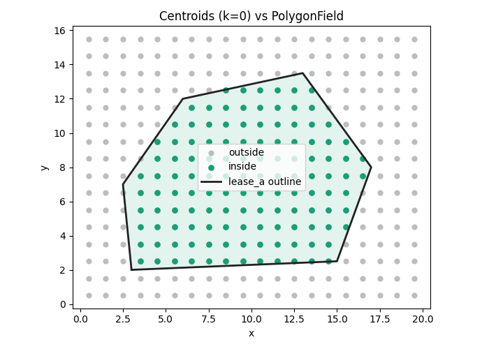
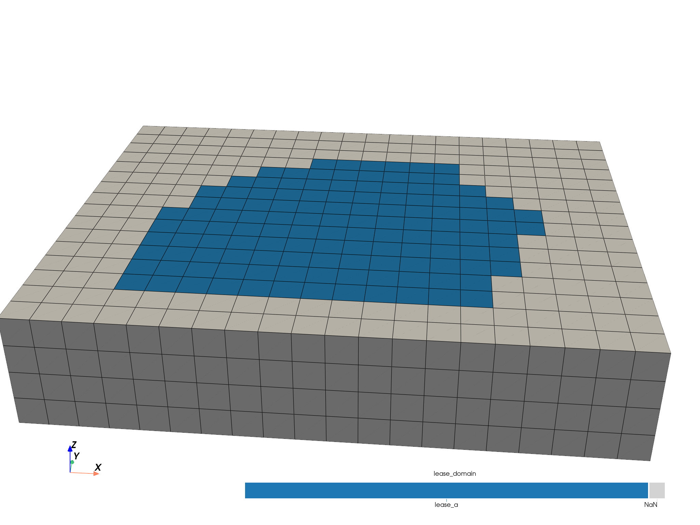

Note
Go to the end to download the full example code.
Polygon Field Flagging#
This example demonstrates end-to-end polygon-based flagging:
Build a regular block model.
Define a named
PolygonFieldfrom Shapely geometry.Visualise the polygon against block centroids in 2D.
Evaluate a boolean mask from centroid-in-polygon tests (XY only).
Encode the result as a categorical block-model attribute.
Plot the final 3D block model by that categorical flag.
import tempfile
from pathlib import Path
import geopandas as gpd
import matplotlib.pyplot as plt
import numpy as np
import pandas as pd
import pyvista as pv
from shapely.geometry import Polygon
from parq_blockmodel import ParquetBlockModel, PolygonField, RegularGeometry
Create a geometry-backed block model#
We start from geometry only, then materialise a canonical .pbm.
temp_dir = Path(tempfile.gettempdir()) / "polygon_field_flagging_example"
temp_dir.mkdir(parents=True, exist_ok=True)
pbm_path = temp_dir / "polygon_field_flagging.pbm"
geometry = RegularGeometry(
corner=(0.0, 0.0, 0.0),
block_size=(1.0, 1.0, 1.0),
shape=(20, 16, 4),
)
pbm = ParquetBlockModel.from_geometry(geometry=geometry, path=pbm_path)
blocks = pbm.read(index=None)
Persist and ingest a named polygon field (GeoParquet)#
We write a simple named polygon table and then ingest by name. This demonstrates the persisted polygon interchange pattern.
lease_outline = Polygon(
[
(3.0, 2.0),
(15.0, 2.5),
(17.0, 8.0),
(13.0, 13.5),
(6.0, 12.0),
(2.5, 7.0),
]
)
polygon_path = temp_dir / "lease_regions.parquet"
regions = gpd.GeoDataFrame(
{"name": ["lease_a"], "geometry": [lease_outline]},
crs="EPSG:4326",
)
regions.to_parquet(polygon_path)
polygon = PolygonField.from_geoparquet(polygon_path, name="lease_a")
print("Polygon name:", polygon.name)
Polygon name: lease_a
Visualise the polygon against centroid locations in 2D#
Evaluation is strictly in world XY; Z is ignored.
mask = polygon.evaluate(pbm.geometry)
first_layer = blocks.loc[blocks["k"] == 0, ["block_id", "x", "y"]].copy()
first_layer["inside"] = mask[first_layer["block_id"].to_numpy(dtype=np.int64)]
fig, ax = plt.subplots(figsize=(7, 5))
ax.scatter(
first_layer.loc[~first_layer["inside"], "x"],
first_layer.loc[~first_layer["inside"], "y"],
s=24,
color="#bdbdbd",
label="outside",
)
ax.scatter(
first_layer.loc[first_layer["inside"], "x"],
first_layer.loc[first_layer["inside"], "y"],
s=28,
color="#1b9e77",
label="inside",
)
poly_x, poly_y = polygon.geometry.exterior.xy
ax.plot(poly_x, poly_y, color="#222222", linewidth=2.0, label=f"{polygon.name} outline")
ax.fill(poly_x, poly_y, color="#1b9e77", alpha=0.12)
ax.set_title("Centroids (k=0) vs PolygonField")
ax.set_xlabel("x")
ax.set_ylabel("y")
ax.set_aspect("equal", adjustable="box")
ax.legend(loc="best")
fig.tight_layout()
plt.show()

Encode the boolean mask as a categorical block-model attribute#
We map True to the polygon name and False to missing (NA).
inside_label = polygon.name or "inside"
domain = np.full(len(blocks), pd.NA, dtype=object)
domain[mask[blocks["block_id"].to_numpy(dtype=np.int64)]] = inside_label
blocks["lease_domain"] = pd.Categorical(domain, categories=[inside_label], ordered=False)
pbm.write(blocks[["block_id", "lease_domain"]], merge=True)
print("lease_domain (NA-aware):")
print(pbm.read(columns=["lease_domain"], index=None)["lease_domain"].value_counts(dropna=False))
lease_domain (NA-aware):
lease_domain
NaN 776
lease_a 504
Name: count, dtype: int64
Plot the final 3D block model using the encoded categorical domain#
plotter: pv.Plotter = pbm.plot(scalar="lease_domain", threshold=False, enable_picking=True, grid_type="image")
# Keep perspective, but bias the camera toward an XY-aligned oblique view so
# the 3D display is easier to relate to the 2D polygon map above.
b = plotter.bounds # xmin, xmax, ymin, ymax, zmin, zmax
cx = 0.5 * (b[0] + b[1])
cy = 0.5 * (b[2] + b[3])
cz = 0.5 * (b[4] + b[5])
dx = b[1] - b[0]
dy = b[3] - b[2]
span_xy = max(dx, dy)
plotter.camera_position = [
(cx + 0.15 * dx, cy - 2.0 * dy, cz + 0.9 * span_xy), # camera position
(cx, cy, cz), # focal point
(0.0, 0.0, 1.0), # up-vector
]
plotter.show()

Total running time of the script: (0 minutes 0.794 seconds)